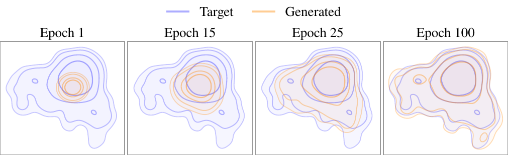

Abstract
Text-to-speech models built on score matching and flow matching produce natural speech, but only by calling the decoder many times, which makes synthesis slow. Existing ways to cut the number of calls either distill from a multi-step teacher or add a stage on top of a pretrained model, thus none of them achieves single-step TTS without a pretrained TTS model. We question whether pretraining a TTS model is necessary, and propose DriftTTS, which adopts generative drifting, an objective that moves iterative sampling from inference into training. Drifting assumes samples of fixed shape, whereas speech has variable length; we address this issue with segment drifting. On LJSpeech, DriftTTS matches the multi-step quality of Matcha-TTS and RapFlow-TTS in a single decoder call, while being faster. To our knowledge, this is the first application of generative drifting to text-to-speech.

Model comparison
Six LJSpeech test sentences synthesized by every system from the same text with the same seed. NFE is the number of decoder calls at inference. DriftTTS uses one call and is meant to be compared against both the single-call baselines and the multi-step ones.